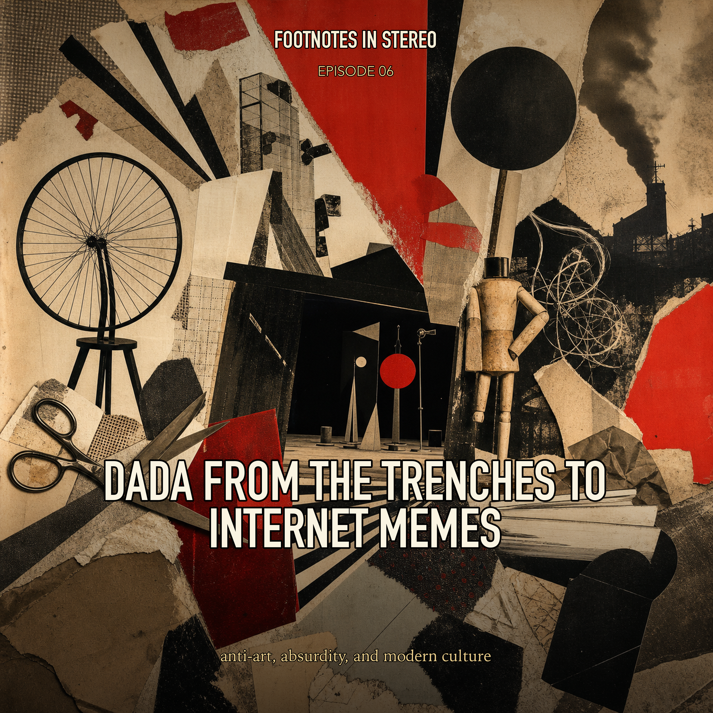

Episode 6 · Public episode
Dada from the Trenches to Internet Memes
Dada begins as anti-art in the wreckage of the First World War, but it keeps escaping its own moment. Mira and Theo follow Cabaret Voltaire, Hugo Ball, Tristan Tzara, readymades, photomontage, Neo-Dada, punk graphics, classroom provocations, and meme culture to ask how absurdity became a durable modern tool for attacking stale systems of meaning. Created with Gemini Notebook.
Sources
- A brief history of Dada - Christie's
- Dada Graphic Design: A Guide to the Art of Anti-Art & Rebellion - Mew Design Docs
- Neo-Dada Movement Overview - The Art Story
- The Birth of Dada - History Today
- The Dada And Punk Movements - UKEssays.com
- What's the Difference Between Dadaism and Surrealism? - TheCollector
- Using Avant-garde Art to Foster Active Learning in the Classroom - SUNY Open Access Repository
- University of Tennessee PDF source captured by Gemini Notebook
Transcript
Machine transcript; lightly formatted and subject to correction.
Transcript processing. Check back shortly.